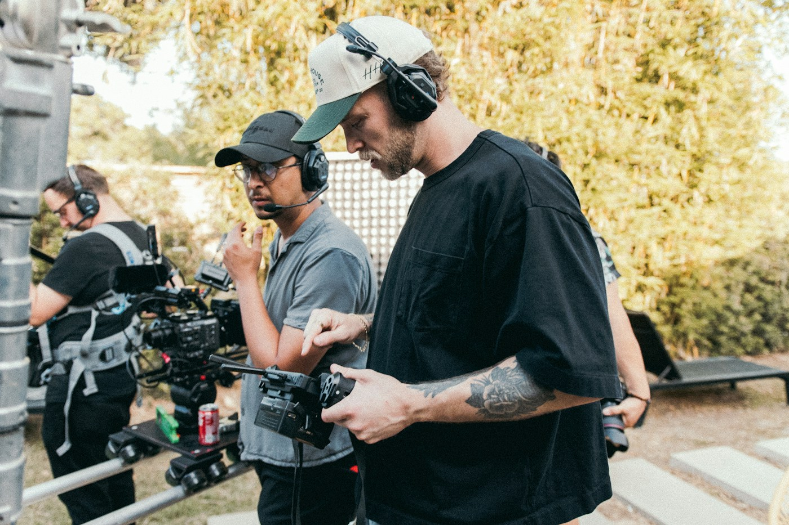
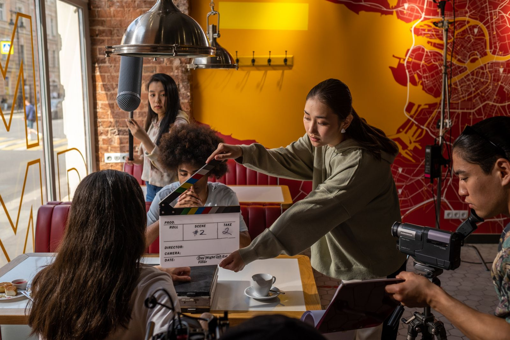
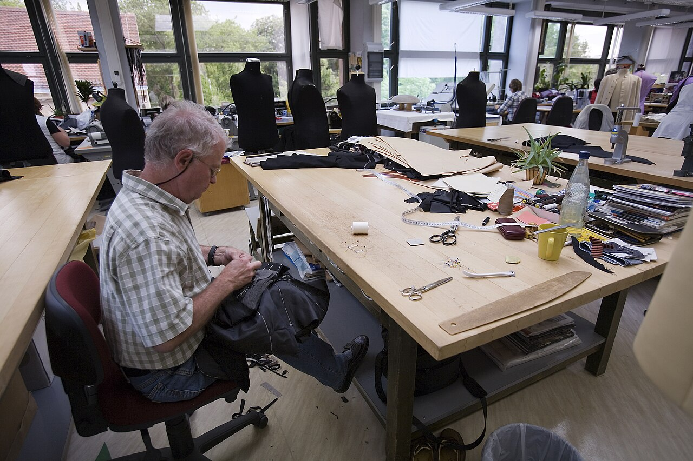
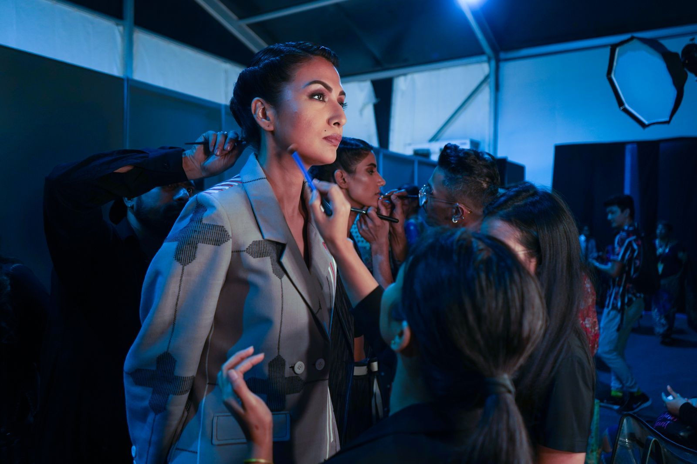
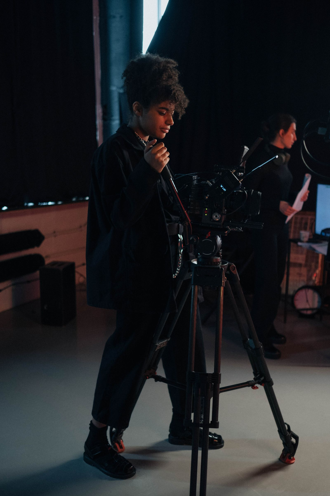
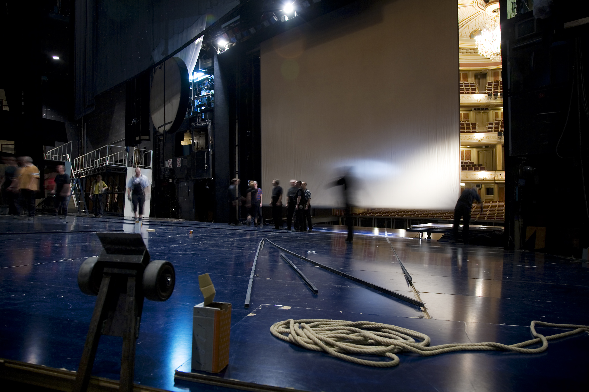
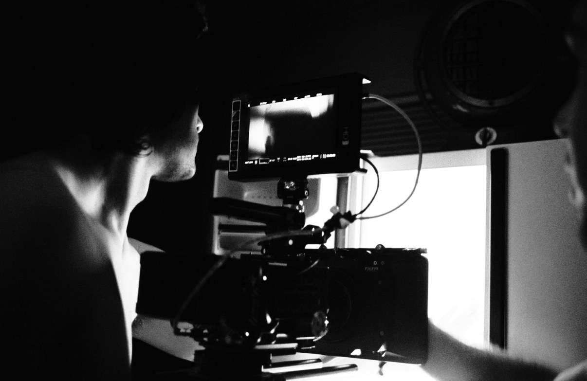
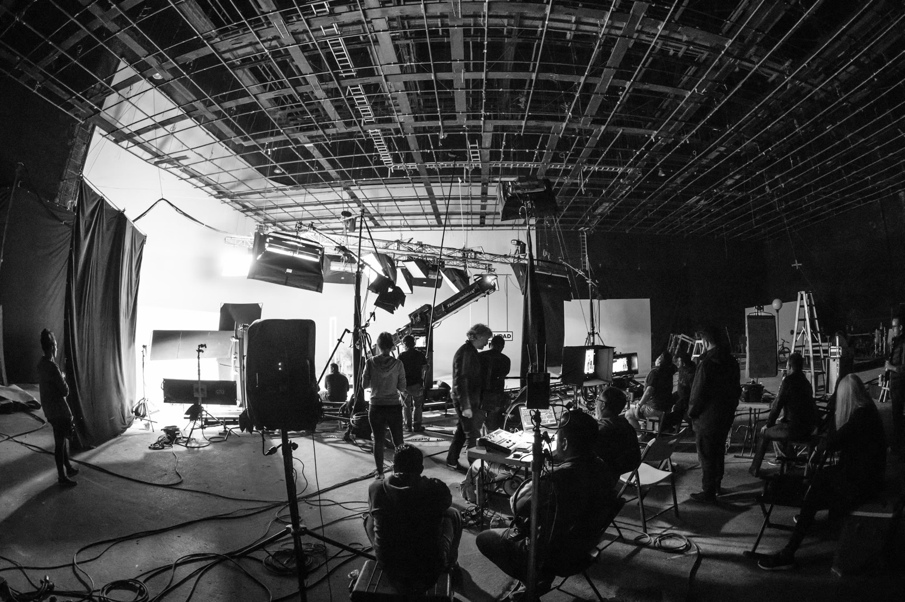

Get in front of the people hiring
Show production teams your skills, credits, and portfolio so they can see what you bring to their next project.
Your next credit starts with your next job. FilmMeet is being built to help you discover crew openings, connect with production teams, and put your experience in front of the people hiring.
Show production teams your skills, credits, and portfolio so they can see what you bring to their next project.
Explore crew openings across film, television, commercials, and digital production—all in one place.
Meet the producers and crew who could bring you onto your next set—and the one after that.








Your next job shouldn’t depend on who you already know.
The industry runs on people. Working with familiar faces and trusted collaborators is one of the best parts of the job. But even the people you’ve worked with for years won’t always have another project lined up—or a role for you when they do.
Expanding your network opens the door to new collaborators and opportunities. But finding those people still means relying on word of mouth and lists, searching through Instagram stories and Facebook groups, and reaching out to people from previous sets.
If you’re moving between cities, building a local network can mean starting from scratch. FilmMeet is being built to make it easier to meet crew in your new city, connect with local productions, and find your next job on set.
Much of the independent film industry runs on freelance work. When one production wraps, the search for the next job on set begins.
FilmMeet brings professional profiles, crew opportunities, and industry connections into one place—helping you expand your network beyond your last set and find the people behind your next one.
For independent productions, that connection works both ways. FilmMeet will help teams find local indie crew with the skills and experience their project needs—whether they’re filming in their home city or working somewhere new.
We're building FilmMeet with an initial focus on the Los Angeles indie film community.
The goal is simple: help the people making films find each other.
Crew professionals and the teams hiring them across film, television, commercials, and digital production.
FilmMeet is preparing for its initial pilot. App availability and launch details will be announced here.
Our first focus is connecting independent crew and productions in one city, building a useful community before expanding.
Questions about FilmMeet, production partnerships, or the vision? We’d love to hear from you.
Email FilmMeet